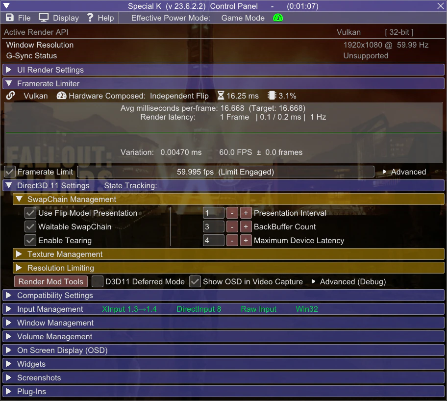

Introduction
Welcome!
Goal of this guide is to fix the abysmal performance in The Elder Scrolls IV: Oblivion by using more modern technologies and tweaks, and make you generally aware of its quirks and other potential issues.The guide is mostly written with an assumption that you've completed Utilities sections from Glory of Cyrodiil
While the guide is focused on this particular game, most stuff shown here is applicable to other games.
Why?
Let's be honest here, the engine did not age well. The renderer is based on now 20 year old DirectX 9, which fails to fit-in with modern GPUs and Windows.
It's extremely inefficient and CPU bound, has glaring issues with display modes, memory handling and overall stability.
As for Bethesda's code - it also fails (horribly) to scale well with modern CPUs, something that you can see even in their latest titles.
In short most performance issues can be summed with two words: CPU bottleneck.
Even with that fact in mind, there are some tweaks to be done on the GPU and presentation side of things that can help with the overall responsiveness of the game, despite not fixing the performance on its own.
Terminology
Things You Should Know
-
Vertical Synchronization (V-Sync) - technology allowing to keep display's scanout and refresh in phase to eliminate screen tearing,
at the cost of higher latency.
(Latency lowers along with refresh rate) - G-Sync | Freesync - Variable Refresh Rate (VRR) technologies developed by NVIDIA and AMD respectively. They allow the display to adapt its refresh rate to the framerate, allowing to use V-Sync at arbitrary framerates and reduce its latency[1] .
- Multiplane Overlays (MPOs) - hardware scanout planes for the GPU. They allow for hardware image composition without any latency or performance penalty (for example displaying windows on top of each other), as well as their hardware scaling and stretching. MPOs are supported since Windows 8.1. Hardware capabilities vary between GPU manufacturers.
- Yes, despite popular misinformation, VRR alone doesn't get rid of tearing. It can minimize the rolling tear however, but that varies between displays, and such, it's not a guaranteed feature. Additionally, the latency reduction applies only at framerates below V-Sync window (display's native refresh rate) - if framerate matches the native refresh rate, VRR engages V-Sync emulation.
Technicalities
More text inside. Explains the concept of presentation models and display modes. While not needed to use the guide, it'll help you with understanding why things are the way they are.Graphics Drivers and Windows
Driver Updates
Not much to say here - for the best compatibility and performance, you must be using the newest driver for your graphics card.
You can check what GPU you have by opening Task Manager, and going to the Performance tab - the last GPU on the left pane is your main one.
If you don't see any GPU there, that means your GPU is too old to use DXVK.
This step is mandatory if you want to use DXVK!
Select your graphics card to go the driver download page |
||
|---|---|---|
Windows Watermark
Make sure your Windows is activated, otherwise the watermark will kick the game into the DWM composition, which leads to increased latency, worse performance and disables VRR.
If you don't have a GPU with MPO (Multiplane Overlay) support, you can mitigate this by disabling Fullscreen Optimizations.
It's still weird to have unactivated Windows though.
How to check if your GPU supports MPOs:
- Type dxdiag into Windows search
- Click Save All Information and save the file.
- Open the DxDiag.txt file, press Ctrl+F and look for MPO MaxPlanes
- If the number is greater than 1, then your GPU has MPO support.
Having the watermark without MPOs will disable VRR and increase latency and stuttering!
This applies only to D3D9 with Fullscreen Optimizations and DXVK with DXGI, since D3D9 Windowed is already in the composed mode, and DXVK uses FSE.
If you have:
- Nvidia 16 series and newer
- AMD Vega and newer
- Intel CPUs 8th Gen and newer
Virtualization
Windows 11 uses virtualization features to increase OS and inter-process security. Unfortunately, this can come at a performance cost, especially on lower-end hardware.I won't be writing on how to disable them, because... Microsoft already made a tutorial about it.
This step is not mandatory, as when it comes to security, it's up to you to decide. Just letting you know that this exists, and even Microsoft acknowledges the fact that it can degrade perfomance.
Display Mode Differences
Presentation Problems
Here's a comparison of three display modes you can use in this game. Situation is problematic mainly due to Vulkan and D3D9 using old presentation models.
Flip Windowed
|
Fullscreen |
BitBlt Windowed
|
|---|---|---|
|
|
|
|
|
|
- Despite that disabled V-Sync unlocks the framerate, window itself is V-Synced, so you don't get any benefits.
-
While AMD enables Freesync for Fullscreen Windowed BitBlt surfaces, Nvidia allows G-Sync to run with any window.
This is problematic because refresh rate can get synchronized to wrong windows, framerate may break on other displays and display stutters may occur.
Enabling it globally is a bad idea, because it disrupts normal desktop usage (e.g. screen can sync to sleeping windows).
It's recommended to use Nvidia Profile Inspector to set G-Sync Application Mode to "Fullscreen and Windowed" in the Elder Scrolls IV: Oblivion profile. This makes Windowed G-Sync run only when Oblivion is running.
Keep in mind that even with this method, this G-Sync implementation is still buggy - if you get any of the forementioned issues, disable it.
Never enable Windowed G-Sync globally!
Oblivion Reloaded Combined
All-in-one
If you use the Glory of Cyrodiil guide, you may skip this section since it's already included there.
Installation
-
If they are not already installed, download Oblivion Reloaded Combined 180 and the ORC Custom Configuration.
DXVK
Translation Magic
DXVK is an open source Direct3D 9-11 to Vulkan translator project lead by doitsujin and Joshua Ashton. While created mainly for Linux, works unofficially on Windows.In short, it allows to run Fallout using Vulkan API which has benefits of much lower draw call overhead than D3D9, which is one of the main performance limiting factors in this game.
If you use Linux, most of this is irrelevant, since Proton on Linux obviously uses DXVK already.
Things about DXVK you must acknowledge:
-
DXVK improves performance in mainly draw call (CPU) bound scenarios (e.g. draw distance), and usually doesn't help much in GPU bound ones (e.g. resolution)
-
It is possible that DXVK won't change anything for you, or even make things worse
-
-
DXVK 2.0 and higher require:
- A Vulkan 1.3 driver
- A VK_EXT_robustness2 driver extension
Those functionalities are a part of your GPU driver, so make sure you have the latest available version.
Keep in mind that even with those conditions met, DXVK 2.0+ may not work correctly for you, due to its Linux-based nature. -
DXVK's GPU compatibility varies between manufacturers
-
Nvidia GPU laptops must use the DXGI interop (see below).
Using it on desktops is not required, but highly recommended for the most optimal experience -
AMD GPUs are more prone to shader issues on Windows (situation is completely reversed on Linux)
AMD dGPU laptops lacking direct dGPU output can not use DXVK due to presentation issues. (Integrated graphics work fine.)
(Vulkan runs in a broken state, GPU is underutilized and can't use proper fullscreen mode - on Nvidia this is resolved by using DXGI presentation, AMD lacks such feature). -
Intel GPUs from 6th Gen and newer can work provided you have newest drivers installed.
DXVK is broken past the 1.10.1 version.
Don't expect a big performance difference, if any, since the game will still be mostly GPU bound.Arc GPUs should work fine, but are untested.
-
-
Oblivion has some known shader issues or quirks. They are not guaranteed to happen (getting rarer with DXVK updates), but they can occur:
- Transparency multisampling uses dithering - (DXVK handles alpha to coverage differently than drivers)
- Broken water reflections (rare, most reports come from older AMD GPUs)
- Broken lights and artifacting (rare, most reports come from older AMD GPUs)
Due to DXVK's nature it relies on shader cache, which is compiled during the first use of that shader.
Because of that you can experience increased short stutter at the beginning of your playthrough.
This is completely normal, and will not reoccur after compilation has finished.
DXVK-GPLAsync patch by Ph42oN and Sporif alleviates this problem thanks to making the compilation asynchronous
DXVK 2.0 and newer precompile shaders on launch, although at the time of writing, on Windows, this feature is Nvidia only. Ph42oN's async patch uses both methods, so it's safe to use on all GPU manufacturers.
Installation
-
Download the latest DXVK version from Nexus.
GPUs lacking VK 1.3 support or having issues with 2.0, must use the 1.10.3 version.
Intel GPUs need to use the 1.10.1 version.
-
Extract archive contents into your Oblivion root folder.
Enabling Flip Model (DXVK with DXGI)
At the time of writing, this feature is Nvidia only!
Nvidia resets those settings on driver updates! Make sure to reapply them after updating.
Thanks Nvidia!
Be wary that current implementation of the interop will degrade performance on PCs.
- Enable Windowed mode in Oblivion.ini.
- In Nvidia Control Panel, in 3D Settings, add Oblivion.exe as profile and set Vulkan/OpenGL present method to Prefer layered on DXGI Swapchain
You can use global profile if you want to use Flip Model in all OpenGL and Vulkan titles. - Press Apply changes and exit.
- Download Nvidia Profile Inspector.
- Extract the archive and run the program.
- Enable "Show unknown settings from NVIDIA predefined profiles" in the top bar (penultimate button).
- Press Ctrl+F and paste OGL_DX_PRESENT_DEBUG.
- Select the setting and click on Show bit value editor on the top bar (last button).
-
In the first column, check bit #00 and #19.
These flags enable DXVK support and fix forced promotion to FSE in some games.
- Click Apply & Close
- Click Apply changes in the top right and exit.
- Install OneTweak to disable window borders.
[Display]
bFull Screen=0
It's recommend to use Special K, since it configures the interop automatically and applies other compatiblity fixes.
It also resolves the settings issue mentioned above.
In case you don't want to, or can't use Special K, you can follow the steps below.
If you don't see those options, then your driver is not up to date!
Recommended FPS Limiters and Their Configurations
(Not) Pushing the Limits
Limiting framerate is very important for overall stability.First and foremost, if you are using a good limiter, you'll be implementing correct framepacing, which is the most important think for the overall fell of fluidity.
More advanced limiters can also reduce latency or power consumption (It's difficult to have both).
Always limit your framerate to an amount you can actually achieve, otherwise you won't get any benefits!
Letting your GPU overwork itself has a big latency impact, so try to cap your framerate at such value, where your GPU doesn't sit at constant 100% usage.
Running at smoother, lower framerate is always better than high, albeit laggy and stuttery one.
Recommended Setups
Recommended configurations based on selected display scenarios:-
V-Sync
- Framerate must be capped slightly below refresh rate to reduce latency.
V-Sync on its own is NOT a limiter. Using it as one introduces a massive latency penalty.
This workaround applies only to RTSS and D3D9 Special K.
(Not needed if you use Special K + DXVK with DXGI)
Driver limiters are not precise enough to pull this off without risking stutter. -
G-Sync | Freesync
- V-Sync must be enabled, in order to fully get rid of tearing.
- Framerate must be capped below refresh rate, in order for VRR to not disengage and fallback to V-Sync, as this causes a very big increase in latency.
-
No V-Sync
- No special prerequisites.
So many options...
Limiters presented here are ordered by their precision, from best to acceptable. The better ones are smoother and can provide better latency reductions, but may have some compatibility issues.Enter your refresh rate here for automatic calculation of FPS limits. You can find your exact refresh rate here.
If you don't use, or not have VRR, it's best to limit your framerate to fractions of your refresh rate. (30 at 60hz, 72 at 144hz, etc.)
Click on the cards below to show the instructions for each limiter.
Special K
Special K is a mod by Kaldaien focused mainly on fixing performance in games and implementing HDR.Its list of features is too long to write here, but the most important one used here is its incredibly versatile limiter and if using DXGI, HDR and (almost) lagless V-Sync.
Warning!
- Special K may conflict with Riva Tuner. If the game crashes or SK doesn't show up in game, make sure Riva Tuner is not running, or set Riva Runer's injection delay to 30000
- Special K's interface in D3D9 breaks water reflections when visible. Simply not having Special K's interaface visible fixes the issue.
- Special K's Vulkan support is currently limited to Nvidia GPUs.
I'm not providing calculated values here, because Special K already does that automatically, and with higher precision
Installation
- Download the Special K Archive from the Stable section, then extract SpecialK32.dll to your Oblivion root folder and rename it to dinput8.dll
- Download the archive with preconfigured settings and extract its content to your root folder.
- Launch Oblivion and press Ctrl + Shift + Backspace to enter Special K Control Panel.
-
Enable the Framerate Limit by ticking the checkbox, then right click on the bar (not graph) next to it:
-
No V-Sync
In right click menu select your refresh rate
Click on Advanced and select the Latent Sync (VSYNC -Off-) modeOptional - Configuring Latent Sync to get rid of tears

-
V-Sync
The subtraction is needed only for D3D9!
The preset included with the guide already optimizes V-Sync for DXGI, so you only need to select the limit.In right click menu select your refresh rate, then Ctrl-Click on the Framerate Limit bar and subtract 0.05
-
VRR + V-Sync
In right click menu select VRR Bias and select the highest value.
- The bias option is not needed for lower values.
-
No V-Sync
If you use DXVK, on the first launch Special K will ask you to enable DXVK support/ Vulkan bridge. Click Yes and relaunch the game if needed.
Your configuration should look similar to this (Picture shows V-Sync configuration on DXVK + DXGI)

RivaTuner Statistics Server
Riva Tuner Statistic Server by Unwinder is probably the most famous FPS Limiter and OSD software, thanks to its performance, compatibility and power usage.Installation
- Install and launch RTSS. Open your System Tray (the triangle pointing upwards on the taskbar) and click on the RTSS icon to open it
- Press green Add button and select Oblivion.exe
- Set Application Detection Level to Low
-
Set Framerate Limit to:
-
No V-Sync
(RefreshRate)
-
V-Sync
(RefreshRate - 0.05)
-
VRR + V-Sync
(RefreshRate * (1 - RefreshRate * 0.00028))
-
No V-Sync
-
Enter settings using Setup button and:
- Enable Passive Waiting
- Set framerate limiter to Front Edge Sync
- Enable Start with Windows or launch RTSS everytime before you play
Your configuration should look similar to this

NVIDIA | AMD driver
The most basic limiters from this list, but definitely the easiest and fastest to set up!
NVIDIA
Configuration
- Open NVIDIA Control Panel, go to Program Settings
- Select Oblivion.exe. If it's not present, add it manually
-
In settings, set Max Frame Rate to:
-
V-Sync | No V-Sync
(RefreshRate)
-
VRR + V-Sync
(RefreshRate * (1 - RefreshRate * 0.00028))
-
V-Sync | No V-Sync
- Click Apply
Your configuration should look similar to this

AMD
Configuration
- Open AMD Software: Adrenaline Edition, go to Gaming tab
- Select Oblivion or search for it in the bar. If not present, click on the three dots and add the executable manually.
-
In games's menu, enable Radeon Chill™️ and set Max FPS to:
-
V-Sync | No V-Sync
(RefreshRate)
-
VRR + V-Sync
(RefreshRate * (1 - RefreshRate * 0.00028))
-
V-Sync | No V-Sync
Your configuration should look similar to this

FAQ
Are these questions really frequent?
-
I can't use DXVK, and I need to Alt-Tab - am I out of luck?
Yeah, all you can do is download OneTweak and use the legacy Windowed mode.
Also enable Windowed mode itself in Oblivion.ini (OneTweak itself doesn't change display modes)[Display]
bFull Screen=0 -
Any way change brightness in Windowed Mode?
You can use ReShade to change the gamma. -
Do texture mods really have an impact on performance?
Not directly, no. As long as you don't go over your VRAM budget and use ORC's memory pool patch you'll be fine. If you run out of VRAM, you'll either crash, or experience massive stutters.
What is guaranteed from higher resolution textures is increase in their load time. This can translate into longer stutter periods on cell loads. -
DXVK is breaking HDR after exiting the game!
Yes, unfortunately due to how FSE works, in addition to lack of native Windows support from DXVK, it doesn't properly handle the HDR API.
If you have a Nvidia GPU, use DXVK with DXGI (You'll get actual HDR too!). Otherwise, normal Windowed. -
Is dgVoodoo 2 a viable alternative to DXVK?
No. While it is true that you'd gain Windowed mode with Flip Model and HDR from it, in contrast to DXVK you are guaranteed to get lower perfomance due to the translation overhead.
If you can handle the performance loss, sure go ahead.
Finish
The End?
Congratulations! You've made it through! I hope this guide has helped you making Oblivion a smoother experience.If you have any issues, questions, critiques or recommendations hit me up on Discord - wall_sogb.
You can also find me on ModdingLinked, xNVSE, Tale of Two Wastelands servers.
I recommend checking this guide from time to time - I'm not done yet.
If you found this guide helpful, share it with others or support me on Ko-Fi or Patreon
Things worth reading
Here are some links to stuff that I recommend checking out:- PCGamingWiki - Great website, contains really helpful info about games, patches, fixes and other PC gaming related stuff.
- BlurBusters - Amazing website by Mark Rejhon focused on displays, latency and image quality. Really worth checking it out if you are a geek for these things.